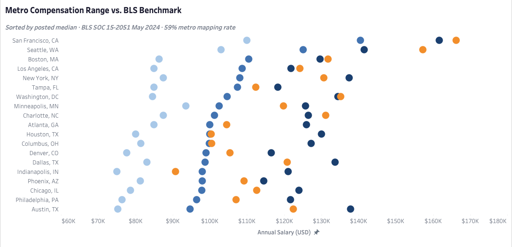
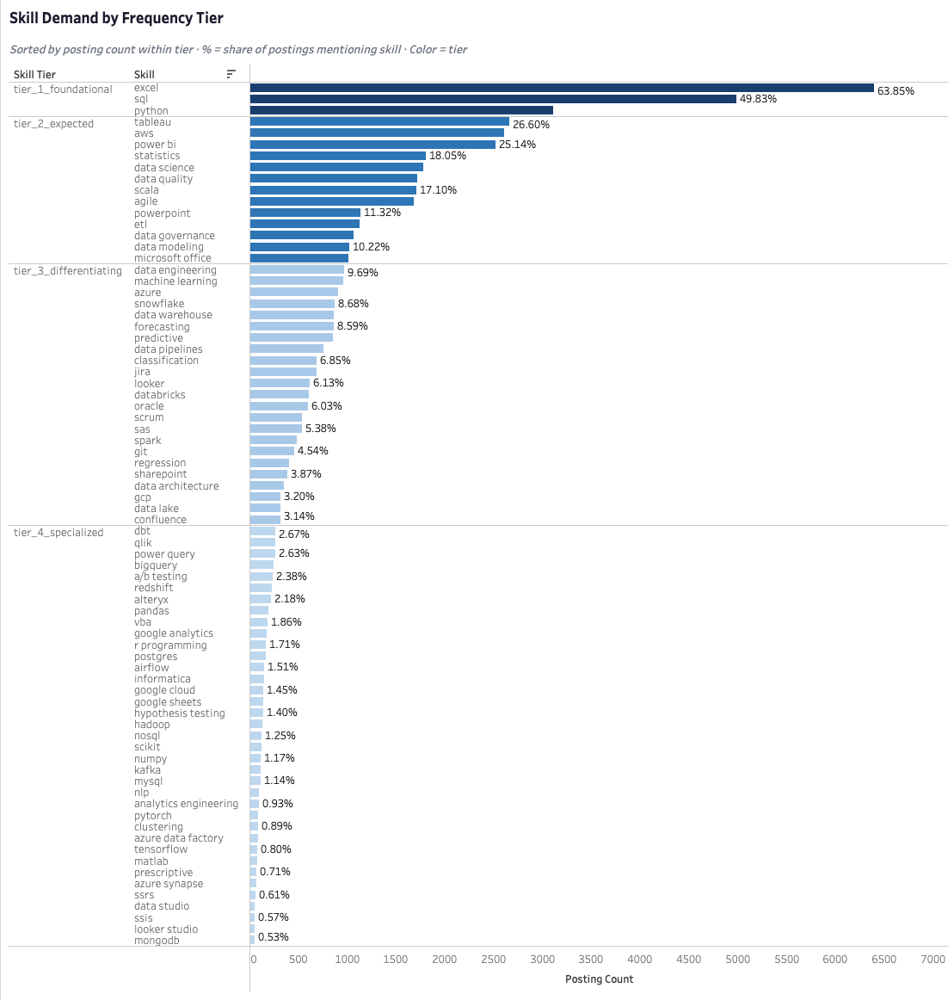
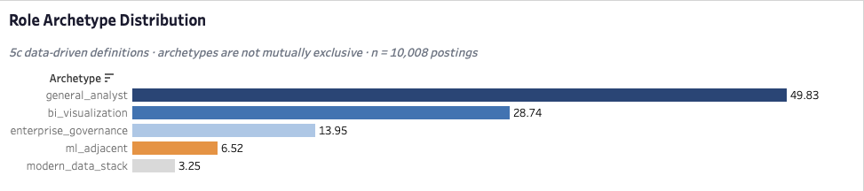
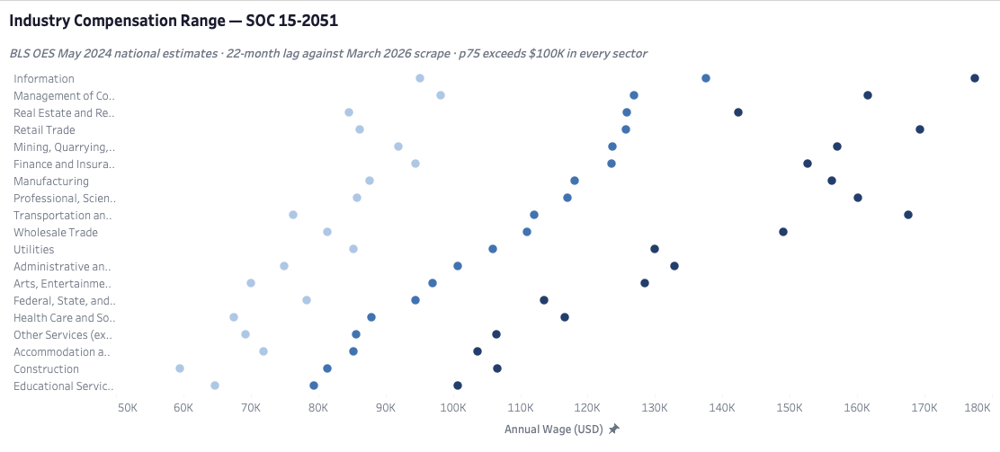
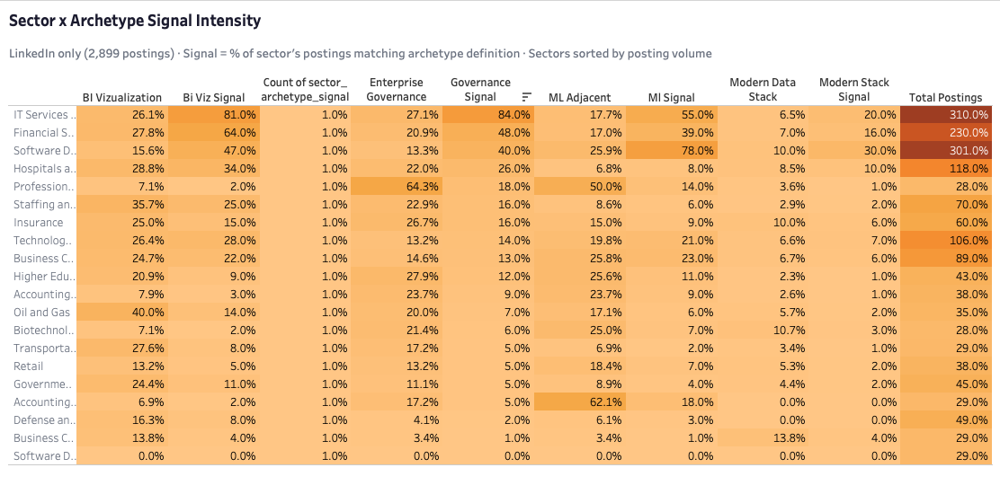

Descriptive Analytics · Complete
FIFA 23 Talent Distribution Analysis
Breaking into data analytics means making three decisions simultaneously — which skills to build, which markets to target, and what to expect in return. This project answers all three with real data, documented limits, and recommendations a candidate can actually act on.
Most advice for early-career data analysts comes from aggregated surveys with opaque methodology, job board content with platform incentives, or anecdote dressed up as insight. The question this project set out to answer was more specific: what does the U.S. data analyst market actually look like on the ground, and what does that mean for a candidate making real decisions about skill investment, market targeting, and salary negotiation right now?
The answer required building the dataset from scratch. 17,076 post-deduplication job postings scraped across three independent sources — Indeed, LinkedIn, and Adzuna — enriched with BLS OES occupational wage benchmarks at the metro, state, and industry level. Every finding was cross-validated against an independent query before being treated as a claim. Four recommendations were formally declined because the data couldn't support them. The result is seven bounded, confidence-rated findings and five recommendations with explicit limits on what they authorize a candidate to do.
Think of it as a map. It shows where the roads are, what the terrain looks like, and which areas concentrate the kind of work you're building toward. It doesn't tell you which path to take or how long it will take to get there. That part is yours.
Each claim below was confirmed against a primary query and at least one independent cross-validation before being included. High confidence means the finding holds across sources and methods. Medium means it's real but bounded by dataset scope. Low means the signal is present but a single snapshot can't establish whether it's growing or fading.
The market pays well, but where and for whom depends on two levers most candidates only think about one at a time. Geography is the obvious one — San Francisco posts a median salary 35% above the market-wide figure, and the spread across metros is wide enough that location genuinely changes the compensation envelope a candidate is entering. What's less obvious is that industry sector is an equally powerful lever operating independently. The gap between the highest and lowest-paying sectors spans over $58,000 — and the upper quartile clears six figures in every sector without exception. A candidate who understands both dimensions simultaneously has more room to maneuver than one who treats salary as a fixed property of the job title.
Three skills define the entry requirement — Excel, SQL, and Python — but possessing them is the condition for being considered, not the reason for being selected. Every qualified candidate in the pool has them. The real question is what comes next. Adding one visualization tool, either Tableau or Power BI, is the one non-negotiable move above that floor — it unlocks the second-largest market segment and signals analytical output delivery in a way nothing else at that tier does. Everything else is learnable once you're in the role. The tier structure below that is where differentiation actually begins, and it's more nuanced than a ranked list of skill frequencies suggests.
Not all skills at the same posting frequency are the same investment. A cloud platform and a BI tool can appear identically often in job postings and represent completely different decisions for a candidate — one is infrastructure a company teaches you when you join their stack, the other is a communication capability they expect you to arrive with. Reading frequency as a direct proxy for priority is the most common mistake a candidate can make with this kind of data, and it produces a preparation sequence that's systematically backwards. Category — what a skill signals about how you work, not just what you know — is what actually governs how an employer reads your profile.
The market isn't evenly distributed across role types. Five archetypes emerge from how skills actually co-occur in job descriptions, and the distribution is lopsided in a way that matters for anyone deciding where to focus. Nearly half of all postings fall into the general analyst category. More than a quarter fall into BI visualization. The three specialization lanes — governance, ML adjacent, and modern data stack — together account for less than a quarter of the market. That shape isn't a hierarchy of quality; it's a map of where the volume is. A candidate targeting a narrow lane from outside the field is making a harder search with lower posting volume and higher skill specificity. That's a decision worth making with eyes open.
Where you work shapes what kind of analyst you'll be asked to be. Within the LinkedIn population, IT Services concentrates governance and BI visualization demand. Software Development shows the highest ML adjacent signal of any major-volume sector. The more interesting finding is what happens at the edges — small sectors like Professional Services and Accounting show extremely high archetype concentration, but across very few postings. High concentration in a small-volume sector is a different targeting proposition than moderate concentration across hundreds of postings, and conflating the two produces a sector strategy that looks precise but isn't. This finding is LinkedIn-only and doesn't generalize to the full dataset. That scope boundary is a condition of the claim, not a footnote.
The candidate who most needs compensation data is the one the market is least likely to give it to. Fewer than 100 postings across the entire dataset disclose salary at the entry level — which means the compensation figures elsewhere in this analysis describe the mid-market and senior distribution, not the floor a new entrant should use to anchor expectations. This isn't a data quality problem. It's a structural feature of how employers behave: entry-level roles disclose salary at a materially lower rate than everything above them. Knowing that changes how you enter salary conversations — not with a number pulled from a median that doesn't represent you, but with the awareness that the asymmetry is real and the negotiation is yours to run.
Generative AI tool mentions appear in just over 6% of postings in the primary corpus — present, but not yet at the saturation level of established technical skills like machine learning. What's more telling than the number is the vocabulary employers use: broad categorical terms like "generative AI" and "AI agent" dominate over specific product names, which is consistent with a market that knows it wants this capability but hasn't yet converged on how to specify it. That gap between awareness and formalization is exactly the window a candidate can move through before it closes. This is a read from one snapshot — whether the signal is growing, stable, or plateauing would require a second scrape to establish.
Five recommendations follow directly from the confirmed claims. Each names the action, what authorizes it, and where it runs out. None of them extend beyond what the evidence licenses.
Four recommendations were considered and explicitly declined. Not because the questions aren't worth asking — they are — but because the dataset structurally cannot support a defensible answer to any of them. Each refusal is documented here because knowing what the data can't tell you is as analytically useful as knowing what it can.
For an early-career analyst navigating this market: the general analyst archetype at nearly half of all postings is the right entry target, Tier 1 plus one visualization tool is the skill floor that gets you competitive, and the sector you choose matters as much as the metro — both levers are real and both are actionable. Everything else is a decision made better from inside the field than from outside it.
Five visuals approved and built in Tableau Public. Each was approved only if its underlying finding was confirmed by both a primary and cross-validation query. Two candidate visuals were formally declined — the skill co-occurrence matrix (the archetypes it produced communicate the finding more cleanly) and an AI tooling standalone bar chart (a single-snapshot frequency chart invites trend inference the dataset cannot support).




